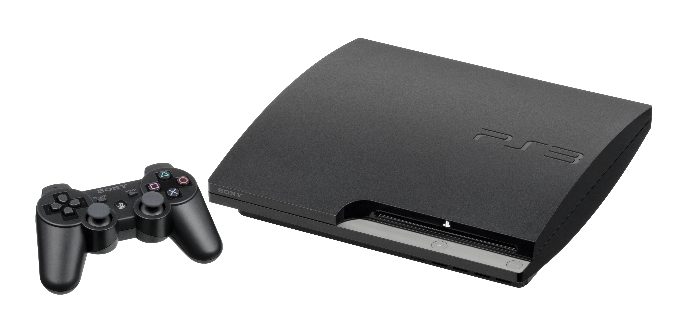

Xbox One es la tercera videoconsola de sobremesa de la marca Xbox, producida por Microsoft. Forma parte de las videoconsolas de octava generación, fue presentada por Microsoft el 21 de mayo de 2013. Es la sucesora de la Xbox 360 y actualmente compite con PlayStation 4 de Sony y Wii U y Switch de Nintendo. Su salida a la venta fue el 22 de noviembre de 2013 a un precio de 499 dólares.
El Firmware actual de la consola es el 10.0.17133.2020 , donde hay más opciones de salida de vídeo, hay un nuevo nivel de interactividad de Mixer, se pueden compartir las capturas en Twitter, hay torneos abiertos, se pueden poner los temas en un horario, hay mejoras al Narrador, mejoras en Edge, hay más audio inmersivo y hay un filtrado avanzado para propietarios de clubes.
ALMACENAMIENTO:
Disco duro SATA 2,5 de 500 GB, 1TB Y 2TB
PROCESADOR:
AMD jaguar x86-64 a 1,75 GHz
AÑO DE PRESENTACION:
fue presentada por Microsoft el 21 de mayo de 2013.
PRECIO:
$1.399.900 (INTERNET)
XBOX 360:
Xbox 360 es la videoconsola de sobremesa de la marca Xbox producida por Microsoft. Fue desarrollada en colaboración con IBM y ATI y lanzada en América del Sur, América del Norte, Japón, Europa y Australia entre 2005 y 2006. Su servicio Xbox Live (de pago) permite a los jugadores competir en línea y descargar contenidos como juegos arcade, demos, tráilers, programas de televisión y películas. La Xbox 360 es la sucesora directa de la Xbox, y compitió con la PlayStation 3 de Sony y Wii de Nintendo como parte de las videoconsolas de séptima generación.3
Como principales características técnicas, están su unidad central de procesamiento basado en un IBM PowerPC y su unidad de procesamiento gráfico que soporta la tecnología de Shaders Unificados. El sistema incorpora un puerto especial para agregar un disco duro externo y es compatible con la mayoría de los aparatos con conector USB gracias a sus puertos USB 2.0. Los accesorios de este sistema pueden ser utilizados en una computadora personal como son los mandos y el volante Xbox 360.
ALMACENAMIENTO:
Disco duro SATA 2,5 de 500 GB.
PROCESADOR:
3.2 GHz (PowerPC) Tri-Core IBM Xenon 512 MB de RAM
AÑO DE PRESENTACION:
fue presentada por Microsoft el 22 de noviembre de 2005.
PRECIO:
$699.990 (INTERNET)
PLAYSTATION 3:

PlayStation 3 es la tercera videoconsola del modelo PlayStation de Sony Computer Entertainment. Forma parte de las videoconsolas de séptima generación y sus competidores son la Xbox 360 de Microsoft y la Wii de Nintendo.
El firmware actual de la consola es el 4.84, en el que se mejora el rendimiento del sistemaLa PlayStation 3 fue lanzada al mercado el 11 de noviembre de 2006 en Japón,8 el 17 de noviembre de 2006 en Norteamérica9 y el 23 de marzo de 2007 en Europa y Australia.1011 Dos variantes estaban disponibles en el momento del lanzamiento: un modelo básico con 20 GB de disco duro SATA 2,5" y un modelo profesional con disco duro de 60 GB y varias características adicionales como doble número de puertos USB y retrocompatibilidad con juegos de su antecesora PlayStation 2 y Playstation 1. El modelo de 20 GB no fue comercializado en Europa y Australia, en su lugar se lanzó el modelo de 40 GB, que fue el que se extendió, ya que eliminaba la retrocompatibilidad, pero abarataba los costes. Desde entonces, a todos los modelos se le han hecho varias revisiones en su hardware para la disminución de su costo de producción y su precio de venta.1
ALMACENAMIENTO:
Disco duro SATA (12 GB, 20 GB, 40 GB, 60 GB, 80 GB, 120 GB, 160 GB, 250 GB, 320 GB, 500 GB) también soporta disco duro del tipo SSD Unidad de estado sólido, aunque el firmware de la PS3 no soporta TRIM para estas unidades.
PROCESADOR:
Cell Broadband Engine 3.1Ghz y 256 MB de RAM
AÑO DE PRESENTACION:
11 de noviembre de 2006
PRECIO:
$ 1.999.900 (INTERNET)
NINTENDO SWITCH:
Nintendo. Conocida en el desarrollo por su nombre código «NX», se dio a conocer en octubre de 2016 y fue lanzada mundialmente el 3 de marzo de 2017.
Nintendo considera a Switch una consola híbrida. Se puede utilizar como consola de sobremesa con la unidad principal insertada en una estación de acoplamiento para conectarla con un televisor. Alternativamente, puede ser extraída de la base y utilizada de forma similar a una tableta a través de su pantalla táctil LCD, o colocada sobre una superficie gracias a su soporte integrado siendo así visible por varios jugadores.
La Switch utiliza dos controladores inalámbricos llamados en conjunto Joy-Con, que incluyen cuatro botones de acción estándar y un joystick direccional, así como sensores para la detección de movimiento y retroalimentación táctil de alta definición, aunque se diferencian en algunos botones y características adicionales. Dos Joy-Con pueden conectarse uno a cada lado de la consola para usarse como consola portátil, conectarse al accesorio Grip proporcionado junto a la consola para usarlos como un mando más tradicional, o ser utilizados individualmente en la mano como el mando Wii, y de esta forma usarse con juegos multijugador locales.
El firmware de Switch es compatible con juegos en línea a través de la conectividad estándar de internet, así como la conectividad ad hoc inalámbrica local con otras Switch. Los juegos para esta consola y otras aplicaciones están disponibles como cartuchos físicos ROM de flash y como distribución digital, y no utilizan bloqueo de región. La Switch compite en el mercado de las videoconsolas con sus contemporáneas PlayStation 4 de Sony y Xbox One de Microsoft.